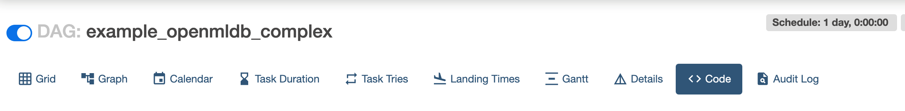
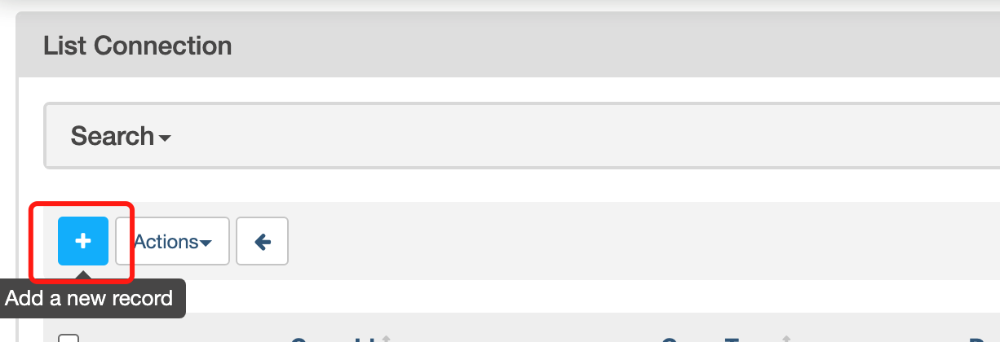

Airflow OpenMLDB Provider 使用案例
Contents
Airflow OpenMLDB Provider 使用案例#
我们提供了Airflow OpenMLDB Provider，使得在Airflow DAG中能更容易地使用OpenMLDB。
本案例将通过Airflow编排TalkingData的训练与上线过程。
TalkingData DAG#
Airflow中需要编写DAG文件，本案例使用example中的example_openmldb_complex.py。

DAG流程如上图所示，首先建表，然后进行离线数据导入与特征抽取，如果效果良好(auc>=99.0)，就进行SQL和模型的上线。反之，则报告失败。
在接下来的演示中，可以将这个DAG直接导入Airflow并运行。
演示#
我们导入上述的DAG完成TalkingData Demo中的特征计算与上线，并使用TalkingData Demo的predict server来进行上线后的实时推理测试。
准备#
下载DAG#
除了DAG文件，还需要训练的脚本，所以我们提供了下载包，可以直接下载。如果想要使用最新版本，请在github example_dags中获取。
wget https://openmldb.ai/download/airflow_demo/airflow_demo_files.tar.gz
tar zxf airflow_demo_files.tar.gz
ls airflow_demo_files
启动镜像#
我们推荐使用docker镜像直接启动OpenMLDB，并在docker内部安装启动Airflow。
登录Airflow Web需要对外端口，所以此处暴露容器的端口。并且直接将上一步下载的文件映射到/work/airflow/dags，接下来Airflow将加载此文件夹的DAG。
docker run -p 8080:8080 -v `pwd`/airflow_demo_files:/work/airflow/dags -it 4pdosc/openmldb:0.6.0 bash
下载安装Airflow与Airflow OpenMLDB Provider#
在docker容器中，执行：
pip3 install airflow-provider-openmldb
由于airflow-provider-openmldb依赖airflow，所以会一起下载。
源数据准备#
由于在DAG中导入数据用的文件为/tmp/train_sample.csv，所以我们需要将sample数据文件拷贝到tmp目录。
cp /work/talkingdata/train_sample.csv /tmp/
步骤1: 启动OpenMLDB与Airflow#
以下命令，将启动OpenMLDB cluster，支持上线并测试的predict server，与Airflow standalone。
/work/init.sh
python3 /work/talkingdata/predict_server.py --no-init > predict.log 2>&1 &
export AIRFLOW_HOME=/work/airflow
cd /work/airflow
airflow standalone
Airflow standalone运行输出将提示登录用户名和密码，如下图所示。

登录Airflow Web界面 http://localhost:8080，并输入用户名和密码。
步骤2: 运行DAG#
在Airflow Web中点击DAG example_openmldb_complex，可以点击Code查看DAG的详情，见下图。

在Code中可以看到使用的openmldb_conn_id，如下图所示。DAG不是直接使用OpenMLDB的地址，而是使用connection，所以我们需要新建一个同名的connection。

创建connection#
在管理界面中点击connection。

再添加connection。 
Airflow OpenMLDB Provider是连接OpenMLDB Api Server的，所以此处配置中填入OpenMLDB Api Server的地址，而不是zookeeper地址。

创建完成后的connection如下图所示。

运行DAG#
运行dag，即完成一次训练模型、sql部署与模型部署。成功运行的结果，类似下图。

步骤3: 测试#
在线导入#
Airflow DAG中完成了SQL和模型的上线。但在线存储中还没有数据，所以我们需要做一次在线数据导入。
curl -X POST http://127.0.0.1:9080/dbs/example_db -d'{"mode":"online", "sql":"load data infile \"file:///tmp/train_sample.csv\" into table example_table options(mode=\"append\");"}'
这是一个异步操作，但由于数据量小，也会很快完成。通过SHOW JOBS也可以查看导入操作的状态。
curl -X POST http://127.0.0.1:9080/dbs/example_db -d'{"mode":"online", "sql":"show jobs"}'
测试#
执行预测脚本，进行一次预测，预测将使用新部署好的sql与模型。
python3 /work/talkingdata/predict.py
结果如下所示。